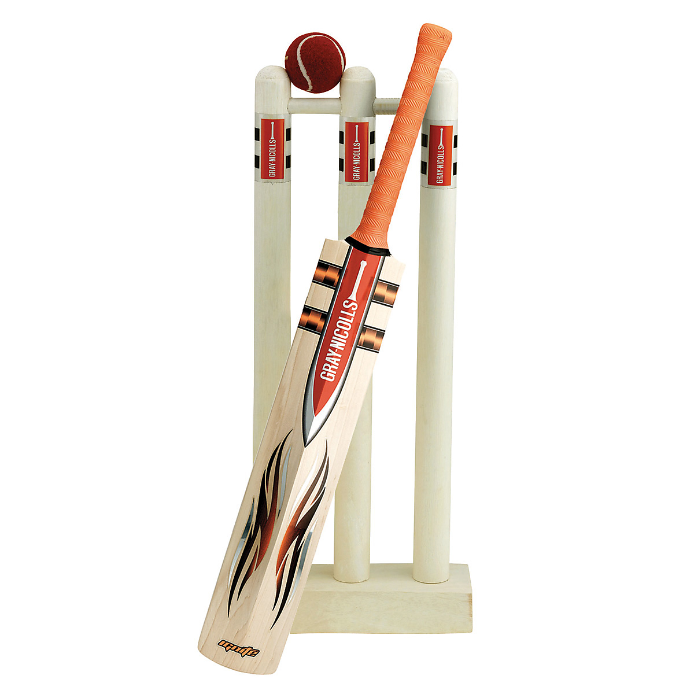

Welcome to Cricket fans.com I'm Krichit Patel. This is website for cricket fans to check scores, results etc. and if you do not know what cricket is? and you want to know about cricket than you can read Introduction to cricket below. or watch video at bottom of the page.
Cricket is a bat and ball game that played between 2 teams. Cricket was first played in southern England in the 16th century and by the end of 18th century it was devloped to be a national sport of England, they started playing cricket with a ball and stick after some time they invited bat and some other equpiments that we need to wear when we play international cricket and now Cricket is second best team game in world. More than 48 nations play cricket and it has three fomat Test, ODI, T20.
Test cricket is the longest format in the game of cricket and you get 5 daysto play 4 innings and each team get 2 innings to play. ODI is limited overs format. Each team get to play 50 overs (1 over = 6 balls) and The Cricket World Cup played in this format every 4 years. T20 Cricket is the format people most enjoyed, In this format each team get 20 overs to play and the T20 Cricket World Cup played in this format every 2 years.